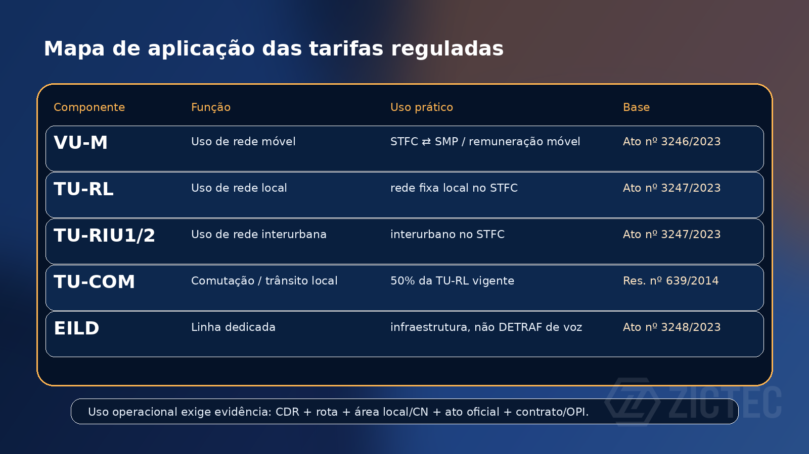
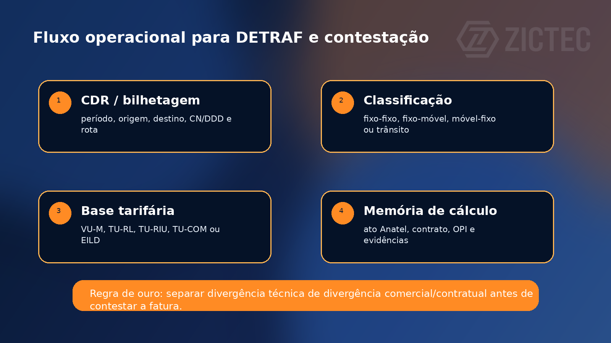

Resumo executivo
Em interconexão de voz, a discussão tarifária não deve começar pelo valor cobrado na fatura. Ela começa pela classificação correta da chamada, pela relação entre as redes envolvidas e pela base regulatória ou contratual aplicável.
Para a operação, a diferença entre VU-M, TU-RL, TU-RIU, TU-COM e EILD precisa estar clara antes de gerar DETRAF, contestar uma cobrança, configurar bilhetagem ou parametrizar regras de roteamento.

1. Visão geral
Em operações entre prestadoras, especialmente STFC e SMP, a interconexão pode envolver remuneração por uso de rede, trânsito, comutação, recursos dedicados e componentes pactuados em contrato ou OPI. Para fins de conferência operacional, separe:
- VU-M — Valor de Uso de Rede Móvel.
- TU-RL — Tarifa de Uso de Rede Local, associada à remuneração de rede fixa local no STFC.
- TU-RIU1 e TU-RIU2 — tarifas de uso de rede interurbana no STFC.
- TU-COM — Tarifa de Uso de Comutação; pela regra regulatória aplicável, seu valor corresponde à metade da TU-RL vigente.
- EILD — Exploração Industrial de Linha Dedicada; não é DETRAF de chamada, mas pode compor custo de infraestrutura de interconexão.
2. Uso prático no DETRAF
Na prática, a confiabilidade do DETRAF depende menos de uma “tabela única” e mais da rastreabilidade da memória de cálculo. O processo recomendado é:
- identificar tipo de chamada e redes envolvidas — STFC local, STFC interurbano, SMP, trânsito ou comutação;
- separar tráfego fixo-fixo, fixo-móvel, móvel-fixo e trânsito;
- aplicar a tabela regulada correta apenas quando a relação estiver sujeita ao valor regulado ou referência aplicável;
- preservar evidências: CDRs, bilhetagem, matriz de áreas, CN/DDD, rota, contrato, OPI e ato regulatório usado como base;
- em divergência de fatura, citar o ato Anatel/SEI e a tabela/ano correspondente.

3. VU-M — valores de referência para 2026 e 2027
Fonte oficial: Ato nº 3246/2023 — VU-M 2024–2027.
| Região PGA-SMP | 2026 | 2027 |
|---|---|---|
| Região I do PGA-SMP | 0,01499 | 0,01497 |
| Região II do PGA-SMP | 0,01686 | 0,01632 |
| Região III do PGA-SMP | 0,01779 | 0,01804 |
4. TU-RL — valores máximos para 2026 e 2027
Fonte oficial: Ato nº 3247/2023 — TU-RL, TU-RIU1 e TU-RIU2 2024–2027.
| Prestadora / área | 2026 | 2027 |
|---|---|---|
| Oi — setores 1, 2, 4 a 17 do PGO | 0,00605 | 0,00611 |
| Oi — setores 18, 19, 21, 23, 24, 26, 27, 28 e 29 do PGO | 0,00608 | 0,00615 |
| Telefônica Brasil — setor 31 do PGO | 0,00610 | 0,00617 |
| Algar — setores 3, 22, 25 e 33 do PGO | 0,00631 | 0,00637 |
| Sercomtel — setor 20 do PGO | 0,00607 | 0,00611 |
| Claro — Região III do PGO | 0,00610 | 0,00617 |
5. TU-RIU1 e TU-RIU2
O Ato nº 3247/2023 também publica valores máximos para TU-RIU1 e TU-RIU2, usados em remuneração de rede interurbana no STFC. Para cálculo operacional, os anexos devem ser consultados diretamente no ato, preservando o ano tarifário, a prestadora/área e o cenário de chamada que justificou o enquadramento.
6. TU-COM
A TU-COM — Tarifa de Uso de Comutação remunera, por unidade de tempo, o uso da comutação e/ou da rede local de uma prestadora STFC quando utilizada para encaminhamento de chamadas entre outras prestadoras que não possuam meios próprios para a interconexão.
Para cálculo operacional, a regra deve ser tratada de forma objetiva: o valor da TU-COM é igual à metade do valor da TU-RL vigente. Essa relação consta no art. 15, § 5º, da Resolução Anatel nº 639/2014, com redação atualizada pela Resolução Anatel nº 768/2024.
Em faturas, DETRAF e contestação, a TU-COM deve ser demonstrada na memória de cálculo a partir da TU-RL aplicável ao ano, prestadora/área e cenário da chamada, preservando contrato de interconexão, OPI e evidências de rota.
7. EILD
A EILD não é uma tarifa de DETRAF de chamadas. Ela pode, porém, aparecer no custo de interconexão ou infraestrutura entre prestadoras. A referência tarifária 2024–2027 consta no Ato nº 3248/2023 — EILD 2024–2027.
DETRAF de chamadas, remuneração de rede e custo de enlace dedicado podem aparecer juntos no relacionamento entre prestadoras, mas não devem ser conciliados como se fossem o mesmo componente.
8. Checklist para conferência de faturas e disputas
- confirmar período de tráfego e ano tarifário aplicável;
- validar origem, destino, CN/DDD, área local e região;
- identificar se a chamada é STFC, SMP, interurbana ou trânsito;
- conferir se o item cobrado é VU-M, TU-RL, TU-RIU, TU-COM, EILD ou outro componente contratual;
- cruzar CDRs com matriz de áreas, rotas e regras de bilhetagem;
- citar o ato oficial da Anatel/SEI na memória de cálculo;
- separar divergência técnica de divergência comercial/contratual.
9. Referências oficiais
- Ato nº 3246/2023 — VU-M 2024–2027
- Ato nº 3247/2023 — TU-RL, TU-RIU1 e TU-RIU2 2024–2027
- Ato nº 3248/2023 — EILD 2024–2027
- Resolução Anatel nº 639/2014 — Norma para Fixação dos Valores Máximos das Tarifas de Uso de Rede Fixa, de EILD e de Exploração Industrial de Roaming Nacional
- Resolução Anatel nº 768/2024 — atualização do prazo/modelos de custo no art. 15 da Resolução nº 639/2014
Observação: este artigo é um resumo técnico-operacional. Em caso de disputa formal, use sempre o ato oficial vigente, contrato de interconexão, OPI da prestadora e memória de cálculo auditável.